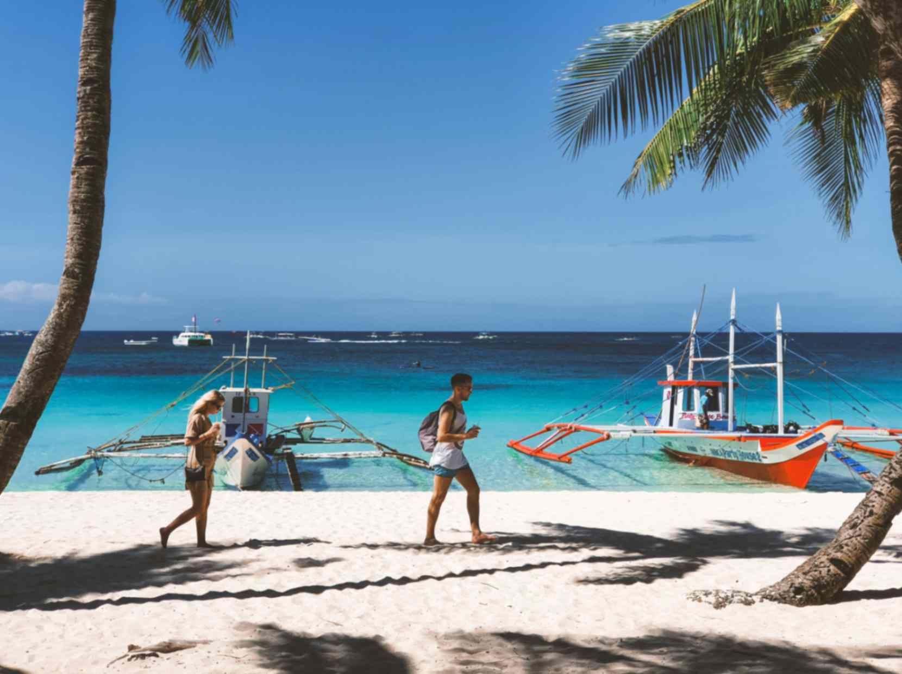
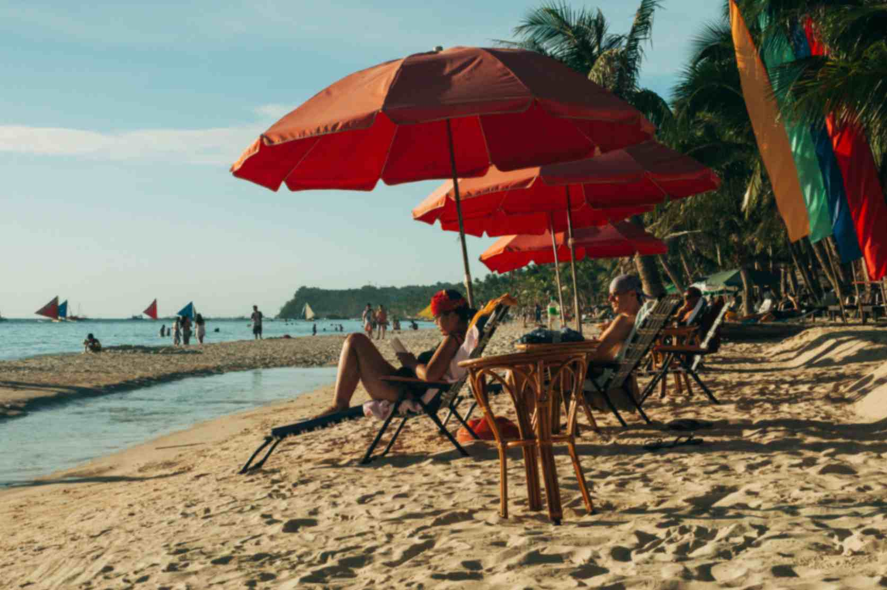
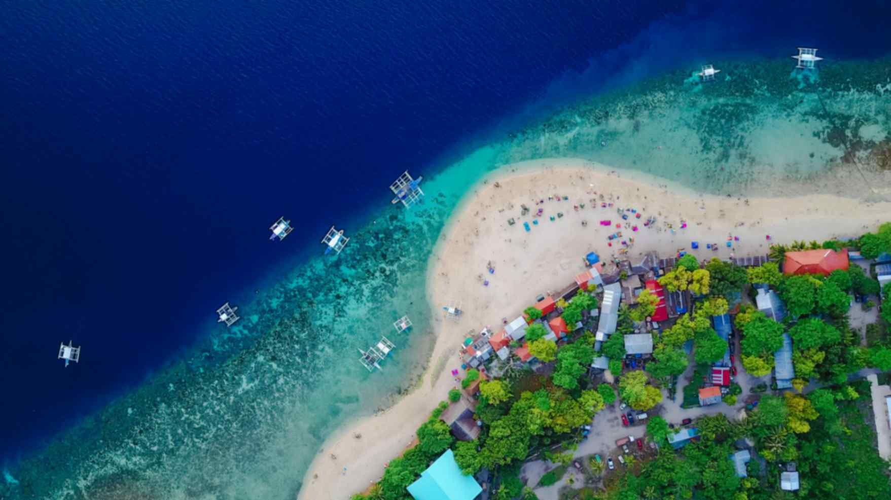
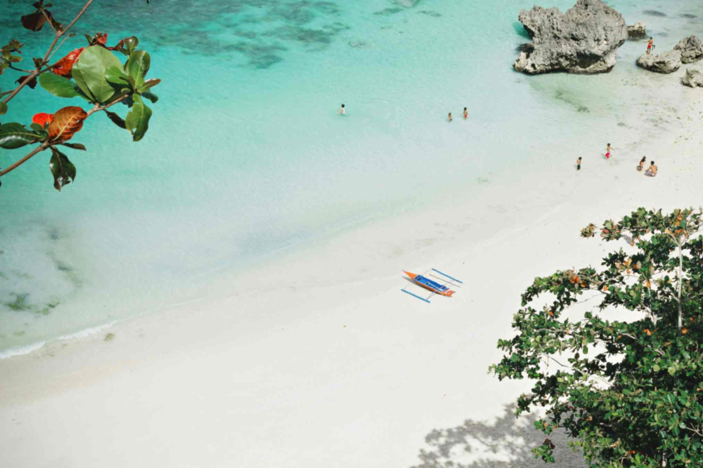
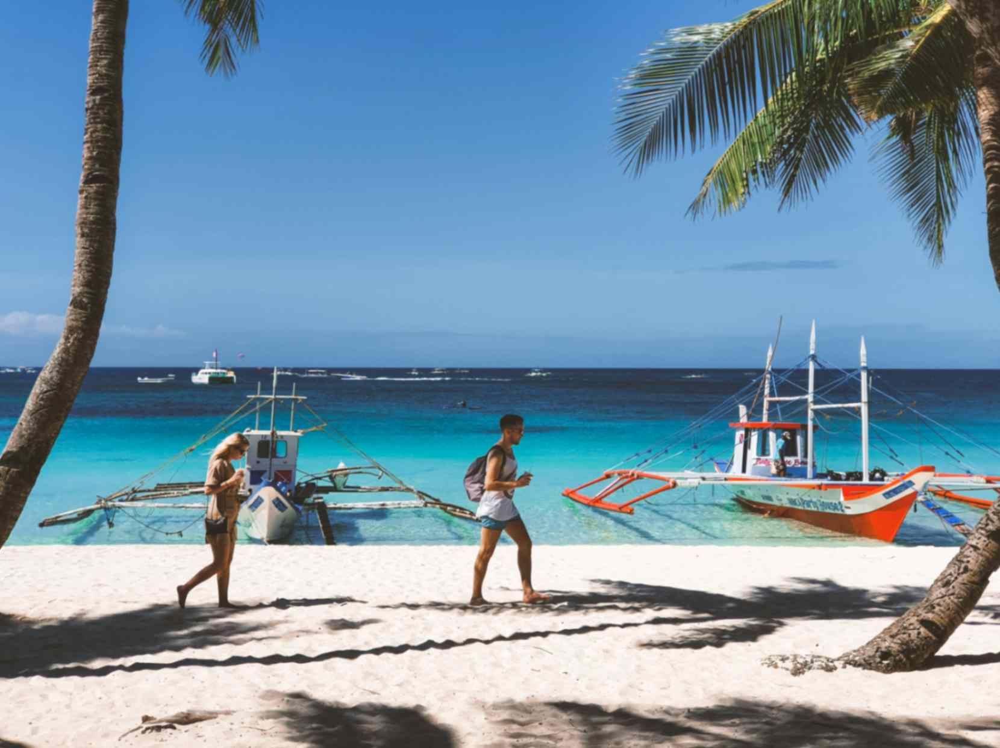
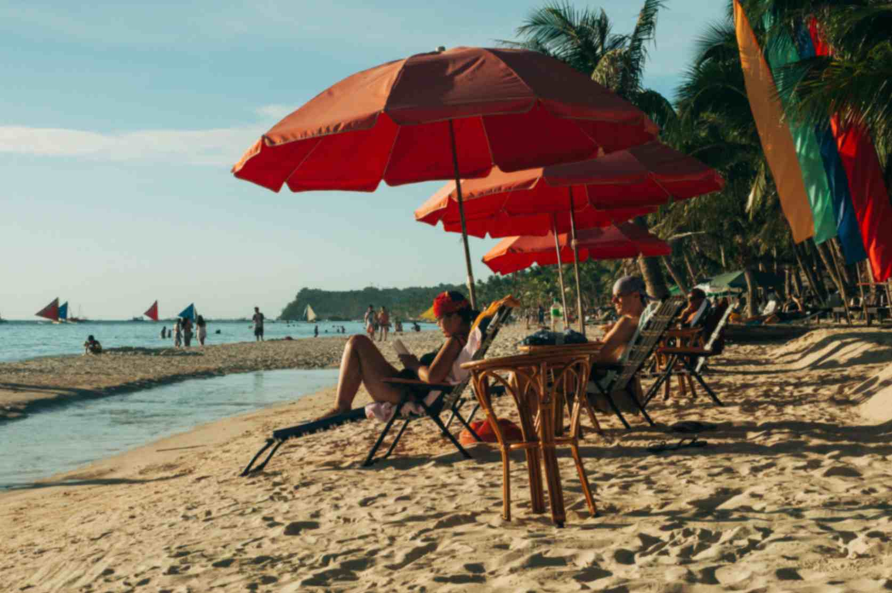
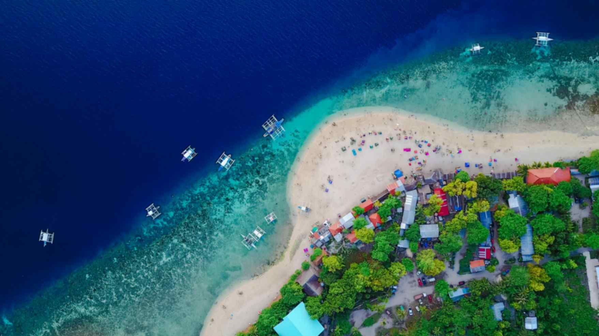
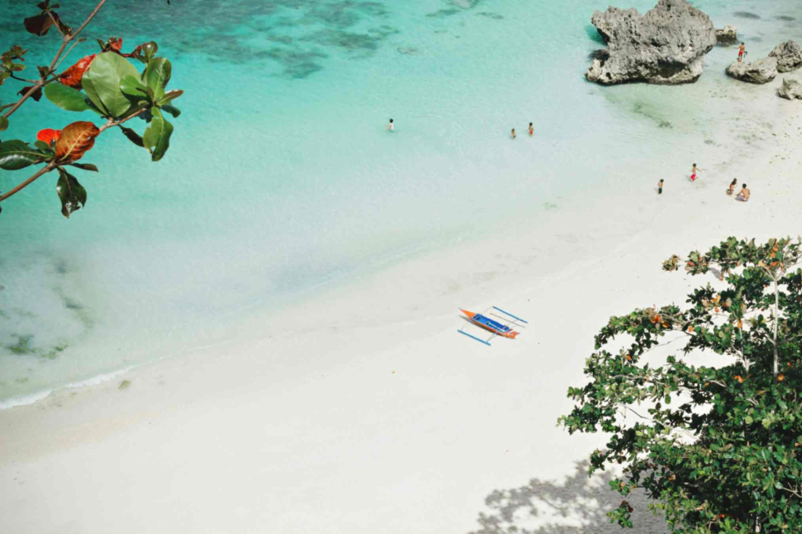

Boracay
While only 7km tall and at its bikini line 500m wide, tiny Boracay is the Philippines' top tourist draw, fuelled by explosive growth and a tsunami of hype. The influx of visitors caused the Philippines government to temporarily close Boracay to tourists for six months. This 'rehabilitation' period, was used to restore the island to its former glory and it has since reopened with a limit on the number of daily visitors.

 







The centre of the action is dreamy White Beach, a 4km, postcard-perfect stretch of sand lined from one end to the other with hotels, restaurants, bars and dive shops several blocks deep. The beach path is typically awash with visitors, including large groups of package tourists.